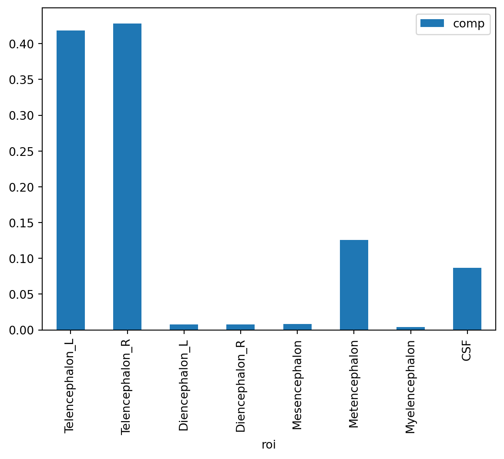

import pandas as pd
import numpy as np
import matplotlib as mpl10 Data cleaning, an example
We’re going to cover data cleaning by an example. Primarily, you’re going to work in pandas, a library for manipulating tabular data.
10.1 Imports and files
The first thing we’ll try is loading some data and plotting it. To do this, we’ll need some packages. Let’s load up pandas, a package for data management, matplotlib for plotting and numpy for numerical manipulations. The python command for this is import.
we say as in order to not have to type out the entire module name to access its methods.
10.2 Reading data in with pandas
Let’s now read in an MRICloud dataset using pandas. We want to use the function read_csv within pandas. Notice we imported pandas as pd so the command is pd.read_csv. Also, pandas can accept URLs, so we just put the link to the file in the argument. The data we want to read in is in a github repo I created.
df = pd.read_csv("https://raw.githubusercontent.com/bcaffo/ds4bme_intro/master/data/kirby127a_3_1_ax_283Labels_M2_corrected_stats.csv")You can see the variables created with locals. However, this shows you everything and you usually have to text process it a little.
Let’s look at the first 4 rows of our dataframe. The object dataset is a pandas object with associated methods. One is head which allows one to see the first few rows of data.
df.head(4)| Unnamed: 0 | rawid | roi | volume | min | max | mean | std | type | level | |
|---|---|---|---|---|---|---|---|---|---|---|
| 0 | 1 | kirby127a_3_1_ax.img | Telencephalon_L | 531111 | 0 | 374 | 128.3013 | 51.8593 | 1 | 1 |
| 1 | 2 | kirby127a_3_1_ax.img | Telencephalon_R | 543404 | 0 | 300 | 135.0683 | 53.6471 | 1 | 1 |
| 2 | 3 | kirby127a_3_1_ax.img | Diencephalon_L | 9683 | 15 | 295 | 193.5488 | 32.2733 | 1 | 1 |
| 3 | 4 | kirby127a_3_1_ax.img | Diencephalon_R | 9678 | 10 | 335 | 193.7051 | 32.7869 | 1 | 1 |
11 Working with the data
Let’s get rid of the column rawid and the unnamed column since they’re kind of useless for today’s lecture. Also let’s work with only the volume.
df = df.drop(['Unnamed: 0', 'rawid', 'min', 'max', 'mean', 'std'], axis = 1)Now let’s create a column called icv for intra-cranial volume. ICV is defined as the summ of the Type I Level 1 structures and cerebrospinal fluid. For the rest of this lecture, we’re just going to look at this type and level. Here df['type'] refers to the pandas column type. You can also reference it with df.type. However, the latter has problems when the variable name has spaces or periods …
t1l1 = df.loc[(df['type'] == 1) & (df['level'] == 1)]
## Create a new column based on ICV
t1l1 = t1l1.assign(icv = sum(t1l1['volume']))
t1l1| roi | volume | type | level | icv | |
|---|---|---|---|---|---|
| 0 | Telencephalon_L | 531111 | 1 | 1 | 1378295 |
| 1 | Telencephalon_R | 543404 | 1 | 1 | 1378295 |
| 2 | Diencephalon_L | 9683 | 1 | 1 | 1378295 |
| 3 | Diencephalon_R | 9678 | 1 | 1 | 1378295 |
| 4 | Mesencephalon | 10268 | 1 | 1 | 1378295 |
| 5 | Metencephalon | 159402 | 1 | 1 | 1378295 |
| 6 | Myelencephalon | 4973 | 1 | 1 | 1378295 |
| 7 | CSF | 109776 | 1 | 1 | 1378295 |
Now the TBV is defined as the sum of the volume for all rows except CSF.
t1l1 = t1l1.assign(tbv = sum(t1l1['volume'][(t1l1.roi != 'CSF')]))
t1l1| roi | volume | type | level | icv | tbv | |
|---|---|---|---|---|---|---|
| 0 | Telencephalon_L | 531111 | 1 | 1 | 1378295 | 1268519 |
| 1 | Telencephalon_R | 543404 | 1 | 1 | 1378295 | 1268519 |
| 2 | Diencephalon_L | 9683 | 1 | 1 | 1378295 | 1268519 |
| 3 | Diencephalon_R | 9678 | 1 | 1 | 1378295 | 1268519 |
| 4 | Mesencephalon | 10268 | 1 | 1 | 1378295 | 1268519 |
| 5 | Metencephalon | 159402 | 1 | 1 | 1378295 | 1268519 |
| 6 | Myelencephalon | 4973 | 1 | 1 | 1378295 | 1268519 |
| 7 | CSF | 109776 | 1 | 1 | 1378295 | 1268519 |
Let’s look at brain composition.
t1l1 = t1l1.assign(comp = t1l1['volume'] / t1l1['tbv'])
t1l1| roi | volume | type | level | icv | tbv | comp | |
|---|---|---|---|---|---|---|---|
| 0 | Telencephalon_L | 531111 | 1 | 1 | 1378295 | 1268519 | 0.418686 |
| 1 | Telencephalon_R | 543404 | 1 | 1 | 1378295 | 1268519 | 0.428377 |
| 2 | Diencephalon_L | 9683 | 1 | 1 | 1378295 | 1268519 | 0.007633 |
| 3 | Diencephalon_R | 9678 | 1 | 1 | 1378295 | 1268519 | 0.007629 |
| 4 | Mesencephalon | 10268 | 1 | 1 | 1378295 | 1268519 | 0.008094 |
| 5 | Metencephalon | 159402 | 1 | 1 | 1378295 | 1268519 | 0.125660 |
| 6 | Myelencephalon | 4973 | 1 | 1 | 1378295 | 1268519 | 0.003920 |
| 7 | CSF | 109776 | 1 | 1 | 1378295 | 1268519 | 0.086539 |
12 Plotting
Pandas has built in methods for plotting. Later on, we’ll try different plotting packages.
t1l1.plot.bar(x='roi',y='comp');
Putting the semicolon after the statement omits a message.
In colab, you have to install packages it doesn’t have everytime you reconnect the runtime. I’ve commented this out here, since plotly is already installed locally for me. To install in colab, use a ! in front of the unix command. In this case we’re using the python package management system pip to install plotly, an interactive graphing envinronment.
pip install plotly==4.0.0Here the 4.0.0 is a version of plotly. If you want the latest stable release version, just omit this.
In a jupyter cell, you can execute a command line command by prefacing the statement with an exclamation point.
We can create an interactive plot with plotly. This is a professionally developed package that makes interactive plotting very easy. Also, it renders nicely within colab or jupyter notebooks. For plotly graphics, I would suggest assigning the graph to a variable then calling that variable to show the plot. This way you can modify the plot later if you’d like.
import plotly.express as px
myplot = px.bar(t1l1, x='roi', y='volume')
myplot.show()